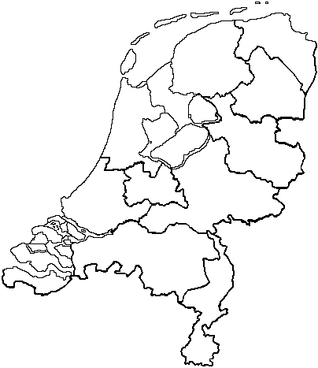

|
|
Home |
Open info |
Snippets |
Links |
Notities |
Utilities (uk) |
Open info - Postcode |
|||||||||||||
|
Voor een hobby-project heb ik de postcoderanges van alle plaatsen van Nederland in een tabel opgenomen. Hierbij heb ik, naar mijn weten, de juiste schrijfwijze van de betreffende plaats en bij welke provincie en gemeente de plaats hoort.
Als een plaats meerdere keren voorkomt in Nederland, dan heb ik in de naam de provincie of de gemeente opgenomen (omdat sommige plaatsen zelfs vaker voorkomen binnen een provincie). In mijn programma's gebruik ik de tabel om de juiste schrijfwijze van de plaats op te zoeken bij de ingevoerde postcode. Ik heb hiervoor gekozen omdat een tabel waarin ook alle straten zijn opgenomen veel sneller muteert en deze gegevens niet openbaar beschikbaar zijn. De gegevens zijn afkomstig uit meerdere openbare bronnen. Maar bij het overnemen van deze gegevens kan ik natuurlijk wel fouten hebben gemaakt. Blader eens door de gegevens heen en meld eventueel gevonden fouten. Waar ik nog naar op zoek ben is een manier om een selectie te maken van plaatsen in een cirkel rond een te kiezen middelpunt. Hiervoor zijn meerdere methodes:
Hoe ik ook zoek, deze gegevens kan ik niet (allemaal) vinden, alleen kopen. Kunt u helpen, schrijf me dan een e-mailtje?  DownloadDe tabel is ook te donwloaden als zip-file. Deze zip-file bevat de Access 2000-database en de losse tabellen in dBase-formaat. TellerDeze pagina is al |
||||||||||||
|
Copyright © 1995-2002 Kees Hiemstra |